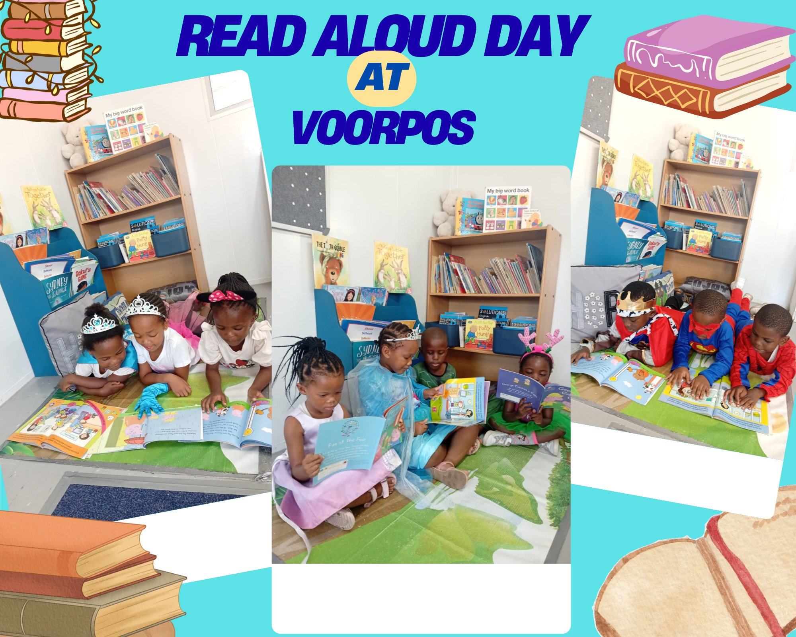
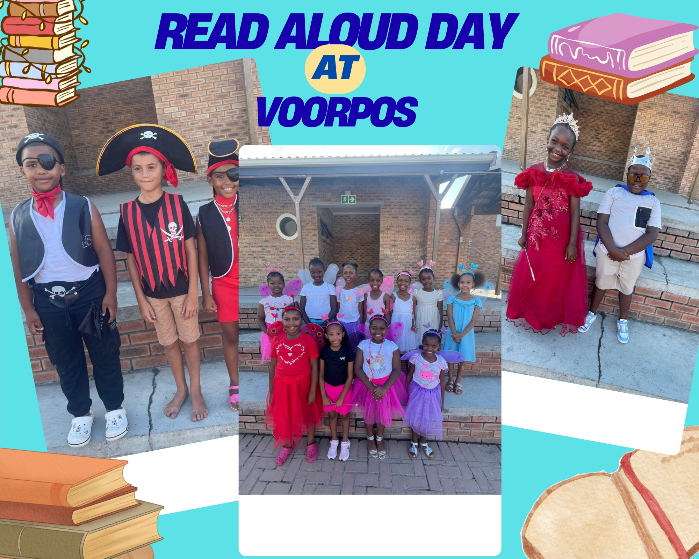
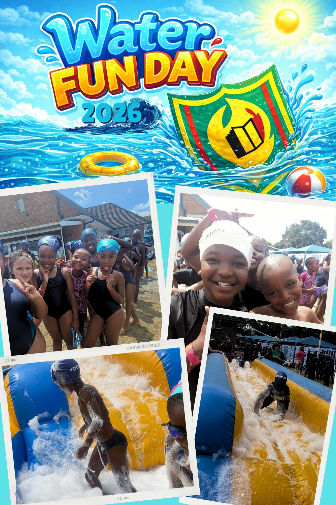

Student Life
At Voorpos Primary, student life goes beyond the classroom. We provide a balanced environment where learners grow academically, creatively, and socially. Through a variety of activities, we encourage curiosity, teamwork, and confidence, helping every child develop their full potential.
Through these activities, friendships are built, talents are discovered, and a strong sense of belonging is created — making Voorpos Primary a true family.



Art & Academics
Fun academic activities that encourage learners to explore.


Music & Sport
Creative expression through music and sport.

Outdoor Entertainment
Chess club, reading club and leadership clubs.